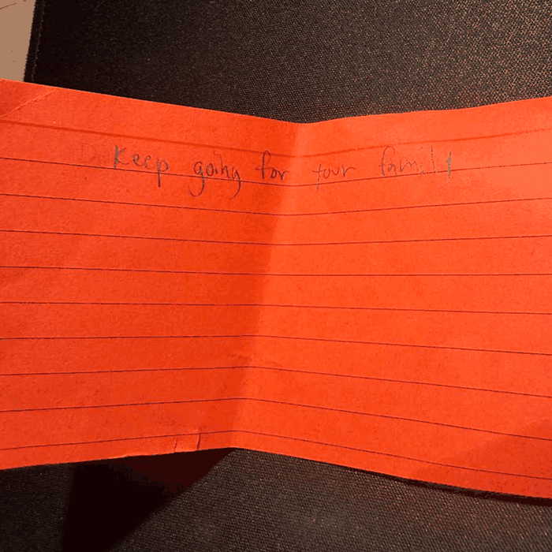

One of my classmate's photographs shows a large stone structure from almost directly in front. What stood out to me first was the staircase running up the center. The repeating steps and nearly symmetrical shape lead your eyes toward the small, dark opening near the top. I also noticed the contrast between the rough gray stone and the bright sky. It makes the structure feel much larger and gives the photograph a strong sense of scale.
The most obvious part of the image is the architecture, but the more mysterious part is the history behind it. I found myself wondering who might have walked up those stairs and what the building was originally used for. The worn stone and the smaller monument at the bottom of the stairs suggest that there is more to the place than we can understand from one photograph.
To make the image even more expressive, I would experiment with a lower camera angle to emphasize the height of the staircase. A tighter crop of the steps or worn stone could also bring out the repeating patterns and textures. I think changing the lighting or focusing on one architectural detail could make the photograph feel more mysterious instead of just documenting the entire structure.
Part Two: What My Backpack Remembers

Photograph by Christopher Sagehorn, 2026.
One image I'm especially interested in using for my Every Picture project is a photo of a motivational note I wrote during Aggie Orientation. At first glance, it might look like an ordinary piece of paper with a handwritten message. What someone wouldn't know just from looking at it is that we were asked to write something that could encourage us in the future. I kept my note because its message still reminds me to keep going when things get difficult.
The image connects to my project, What My Backpack Remembers, because I want to explore how everyday belongings can hold memories and personal meaning. My backpack carries school supplies, technology, and other essentials, but those objects also reflect my routines, responsibilities, and experiences. This note feels different from the more practical things I carry because it represents a specific moment from the beginning of my time at UC Davis.
To make the photograph more compelling, I could crop closer to the handwriting or photograph the folds and texture of the paper from another angle. I would also experiment with lighting and shadows so the image feels more like a personal memory than just a photo documenting an object.
The article made me think more about how quickly I usually look at an image and decide what it means.
I liked the idea of slowing down, noticing smaller details, and asking what evidence in the image supports an interpretation.
That feels especially relevant to design because an image can communicate different things depending on what someone notices first or what experiences they bring to it.
While looking through Awwwards, I found The Hands That Sew, an interactive website about the people who worked in the Balenciaga fashion houses.
I thought one of the strongest parts of the site was how it combines photographs, stories, and interaction instead of presenting everything as a basic image gallery.
Exploring the site gradually reveals more information about the people behind the clothing, which makes the images feel more personal and meaningful.
One possible drawback is that the minimal and immersive design requires more exploration before it is immediately obvious where all of the information is located.
Still, I think that works well with the subject because it encourages the viewer to slow down and discover information instead of seeing everything at once.
After reading Kathryn Whitenton’s Overuse of Overlays: How to Avoid Misusing Lightboxes, I realized overlays can easily become more annoying than helpful when used without a clear purpose. I had mostly thought of overlays as a useful way to show extra information without making someone leave the page. The article made me think more about situations where they actually make things harder, especially when the overlay has too much text, requires a lot of scrolling, or is difficult to close on a smaller screen. I also liked the idea of asking who, what, when, where, and why before deciding to use an overlay.
One point that stood out to me was that overlays should usually appear because of something the user chooses to do, rather than suddenly interrupting them. The article also recommends having a clear close option and allowing keyboard users to close the overlay with the Escape key. That connects directly to the overlay we made in class, since ours opens after clicking a link and can be closed with either the close button or Escape. Going forward, I would keep overlays short and focused. If the content needs a lot of scrolling or navigation, I think putting it on its own page would probably be easier for the user.
One thing that stood out to me was how much a form can improve just by removing unnecessary questions.
I usually notice forms more when they are annoying to fill out, especially when they ask for information that does not seem necessary.
The article also talked about using a single-column layout, which makes sense because it gives you one clear path down the page instead of making you figure out where to look next.
Both ideas seem simple, but they can make a form feel much quicker and less overwhelming.
When I design forms myself, I would try to keep them simple and only ask for information that is actually needed.
I would also make sure the labels and instructions are clear so people do not have to guess what they are supposed to enter.
I think a good form should feel easy enough that you do not really have to think about how to use it.
If I have to stop and figure out what a field means or where to go next, the design is probably making the process harder than it needs to be.
Google Forms is a good example because the forms are usually simple to follow and clearly show what information you need to enter.
I also like that the questions are organized in a straightforward order, so it is easy to move through the form without getting confused.